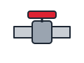
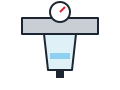
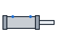

2Air path, from the compressor to the cylinders
Air passes through these stations. Follow the arrows.
Compressor, tank and dryeroil-free, 24 L, 6 to 8 bar, dry air

Shut-off valve 0V1manual 3/2, lockable, for repairs

Combination unit 0Z1filter, regulator, gauge: 5 bar
Pressure switch B5tells the PLC the air is OK (I1.2)
12 valvesnine 3/2 and three 5/2, one per cylinder

12 cylinders9 single-acting, 3 double-acting
Low air = stop
If the pressure switch B5 opens, the PLC stops the machine and shows an alarm. Cylinders would be too weak or too slow.
One special pressure
The seal band press (9A) gets 3 bar from its own combination unit 0Z2. Its spring takes about 20 N, so 3 bar still presses the film with about 65 N (60 N needed).
Speed of each rod
A one-way flow control sets how fast each rod moves, so nothing slams into its end stop: one on a single-acting cylinder, two on a double-acting one.